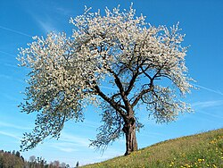
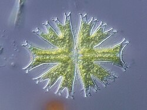
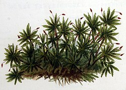
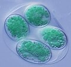
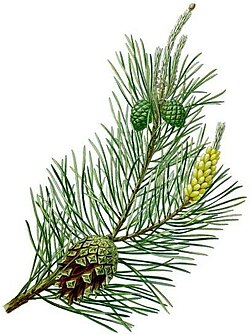
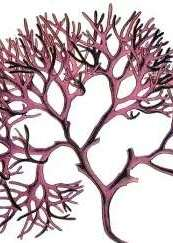
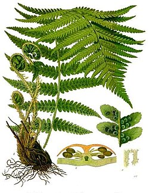
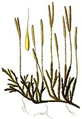

Plants are the eukaryotic organisms that constitute the kingdom Plantae. They are predominantly photosynthetic, meaning that they obtain their energy from sunlight. They do that using the green pigment chlorophyll in their chloroplasts to produce sugars from carbon dioxide and water. Exceptions are parasitic plants that have lost the genes for chlorophyll and photosynthesis, and obtain their energy from other plants or fungi. Most plants are multicellular, except for some green algae.
Historically, as in Aristotle's biology, the plant kingdom encompassed all living things that were not animals, and included algae and fungi. Definitions have narrowed since then; current definitions exclude fungi and some of the algae. By the definition used in this article, plants form the clade Viridiplantae (green plants), which consists of the green algae and the embryophytes or land plants (hornworts, liverworts, mosses, lycophytes, ferns, conifers and other gymnosperms, and flowering plants). A definition based on genomes includes the Viridiplantae, along with the red algae and the glaucophytes, in the clade Archaeplastida.
The domestic cat is the only domesticated species of the family Felidae. Advances in archaeology and genetics have shown that the domestication of the cat started in the Near East around 7500 BCE. Today, the domestic cat occurs across the globe and is valued by humans for companionship and its ability to kill vermin. It is commonly kept as a pet, working cat, and pedigreed cat shown at cat fancy events. Out of the estimated 600 million domestic cats worldwide, 400 million reside in Asia, including 58 million in China. The United States leads in cat ownership with 73.8 million cats, followed by the United Kingdom with approximately 10.9 million cats. It also ranges freely as a feral cat, avoiding human contact. Pet abandonment contributes to increasing of the global feral cat population, which has driven the decline of bird, mammal, and reptile species. Population control includes spaying and neutering.
Some plants are trees, sunflowers, tulips, lavender and grass.